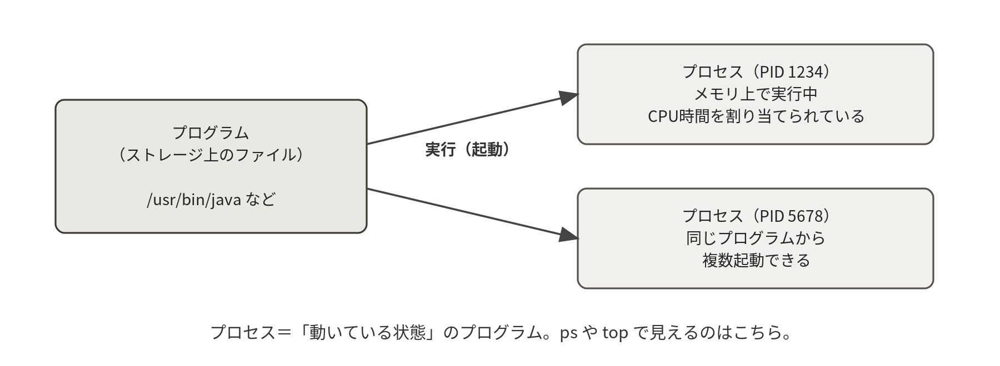
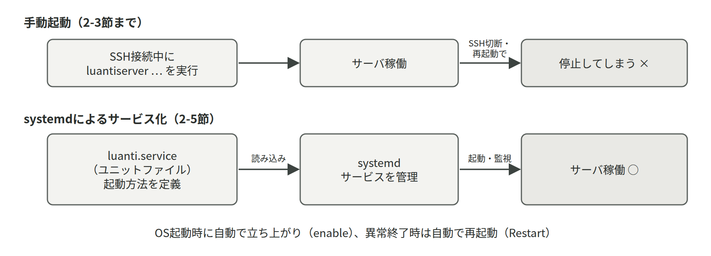

- プロセスとPID、そしてシグナルでプロセスに介入するという考え方
- systemdのユニットファイルの各項目が何を決めているか
startとenableとdaemon-reloadの違い- load averageと
free -hの値を「いつもと比べて」読む方法
6-1プロセスとは
実行中のプログラムをプロセスと呼ぶ。ストレージ上のプログラムファイル（例：/usr/games/luantiserver）は単なるデータだが、実行されるとメモリに読み込まれ、CPU時間を割り当てられ、一意の番号（PID：Process ID）を持つプロセスになる。同じプログラムから複数のプロセスを起動することもできる。プロセスは別のプロセスから生み出され（親プロセス・子プロセス）、システム全体で1本の家系図を成す。その頂点（PID 1）が、次に述べるsystemdである。
- プロセスprocess / PID
- 実行中のプログラム1つ分の実体。起動ごとに一意の番号（PID）が付き、
psやkillではこの番号で相手を指定する。

プロセスへの介入はシグナルという通知で行う。kill コマンドは名前に反して「シグナルを送る」コマンドであり、標準では「終了してください」という丁寧な依頼（SIGTERM）を送る。プログラムはこれを受けて後片付け（Luantiサーバならワールドの保存）をしてから終了する。
応答しない場合の最終手段が kill -9（SIGKILL）で、これは後片付けの機会を与えず即座に抹消するため、データ破損のリスクがある。systemctl stop が安全なのは、SIGTERMを送って行儀よく終了させているからである。
- シグナルsignal / SIGTERM・SIGKILL
- プロセスに送る短い通知。SIGTERMは「片付けて終了してほしい」という依頼、SIGKILLは問答無用の強制終了で、後者はプログラムに保存の機会を与えない。
SIGKILLはプログラムに保存の機会を与えないため、Luantiサーバなら直前までのワールドの変更が失われうる。まず systemctl stop または kill を試し、数十秒待っても消えない場合の最後の手段として kill -9 を使う。
6-2systemdとサービス
OSの起動時に最初に立ち上がり、システム全体のサービスを管理するのがsystemdである。サービス（常時稼働するプログラム。デーモンとも呼ぶ）の定義はユニットファイルに記述し、systemctlコマンドで操作する。実習で /etc/systemd/system/luanti.service を書いたのが、まさにこのユニットファイルである（第2回 2-5）。ユニットファイルの主要な項目の意味を整理する。
- systemdPID 1 / systemctl
- Linuxの起動直後から最後まで動き続け、すべてのサービスの起動・停止・再起動・自動起動を管理する仕組み。操作の窓口が
systemctlコマンドである。
- ユニットファイルunit file / .service
- 「どのコマンドを、どのユーザで、いつ起動するか」を書いたサービスの定義ファイル。
/etc/systemd/system/に置き、編集したらsystemctl daemon-reloadで読み直させる。
| 設定項目 | 意味 |
|---|---|
Description | サービスの説明（statusで表示される） |
After=network-online.target | 起動順序の指定。「ネットワークが使えるようになってから起動」 |
User / WorkingDirectory | 実行ユーザと作業ディレクトリ |
ExecStart | 起動コマンド（絶対パスで書く） |
Restart=on-failure | 異常終了時に自動で再起動する |
WantedBy=multi-user.target | 「通常のサーバ稼働状態」の一員として起動する（enable時に有効になる） |

混同しやすいのが start と enable の違いである。start は「今すぐ起動する」、enable は「OS起動時に自動で起動するよう登録する」であり、独立した操作である。「startしたのに再起動したら動いていない」はenable忘れ、「enableしたのに今動いていない」はstart忘れ、が典型である。
また、ユニットファイルを編集したら daemon-reload で再読み込みしなければ反映されない。この3点は実務でも頻出のつまずきポイントである。
systemdは読み込み済みの内容で動いている。sudo systemctl daemon-reload を実行してから restart すること。この順番を忘れると「編集が効かない」という症状になる。
実行ユーザを変えると、そのユーザがワールドや設定ファイルを読み書きできる必要がある。第3回 3-3では chown で所有者を移したうえで、Environment=HOME=/home/luanti の1行も追加している。Luantiは実行ユーザのホームディレクトリを参照するためである。
サービスのログはjournaldが一元管理しており、journalctl -u サービス名 で読める。-e（末尾へ移動）、-f（リアルタイム追跡）、--since "10 min ago"（期間指定）などのオプションを覚えておくと調査が速くなる。ログの読み方そのものは第8章 8.1で扱う。
- journaldjournalctl
- systemdが管理するサービスの出力を一元的に受け取って保存する仕組み。サービスが画面に出すはずだったメッセージは、すべて
journalctl -u サービス名で後から読める。
6-3負荷の指標を正しく読む
load averageは「実行したい（CPU待ちの）プロセスの平均数」である。厳密にはLinuxでは、ディスクI/Oの完了を待っているプロセス（割り込み不能スリープ）も数に入るため、SDカードの遅いRaspberry Piでは、CPUに余裕があってもI/O待ちで値が上がることがある。値がCPUコア数以下なら全プロセスに即座にCPUが行き渡っており、コア数を超えると順番待ちが発生している。Raspberry Pi 400は4コアなので、load averageが4を超え続ける状態は明確な過負荷である。
uptimeが表示する3つの数字は1分・5分・15分の平均であり、「1分値だけ高い」なら一時的なスパイク、「15分値まで高い」なら慢性的な過負荷、と時間方向の傾向も読み取れる。実際に負荷をかけて値の変化を見るのが第3回 3-5 演習：負荷実験である。
- load averageuptime / top
- CPUの順番待ちをしているプロセスの平均数。CPUコア数（Raspberry Pi 400は4）が目安で、これを超え続けていれば処理が追いついていない。
メモリについては、free -h の available（実際に使える量）を見る。Linuxは空きメモリを積極的にキャッシュ（buff/cache）に使うため、freeの値が小さくても問題ないことが多い。危険なのはスワップ（メモリが足りないときにディスクを代用する仕組み）が常用されている状態で、ディスクはメモリより桁違いに遅いため、体感速度が急激に悪化する。「サービスに使わせるメモリ」と「OSに残すメモリ」を分けて考えるのがサーバのメモリ設計の基本である。Luantiのような軽量サーバでも、Modの追加や接続人数の増加で使用量は変わるため、free -h による定点観測が重要になる。
free -h の free が少ないので、メモリが足りていない
Linuxは空きメモリをディスクキャッシュ（buff/cache）に回すので、freeが小さいのは正常である。見るべきは available の値と、swapが増え続けていないかである。
load averageが高い＝CPUが忙しいLinuxのload averageはディスクI/O待ちのプロセスも数える。SDカードの遅いRaspberry Piでは、CPUに余裕があってもバックアップ中などに値が跳ね上がることがある。top のCPU使用率と合わせて判断する。
6-4プロセスの操作（ps・kill・ジョブ制御）
ps aux の出力は、USER（実行ユーザ）、PID（プロセス番号）、%CPU・%MEM（資源の使用率）、STAT（状態）、COMMAND（起動コマンド）と読む。第3回 3-3で「luantiserverがluantiユーザで動いているか」を確かめたのは、このUSER列である。プロセスへの介入は6.1節で述べたとおりシグナルで行い、その道具がkillである。
| 操作 | はたらき |
|---|---|
ps aux | grep 名前 | プロセスを探す（pgrep -f 名前 でPIDだけを得る方法もある） |
kill PID | SIGTERM（終了依頼）を送る。後片付けの機会が与えられる |
kill -9 PID | SIGKILL（即時抹消）。応答しないときの最終手段 |
| Ctrl+C | 前面で実行中のコマンドに中断（SIGINT）を送る |
Ctrl+Z → bg ／ fg | 一時停止して背面へ回す／前面に呼び戻す。jobs で一覧 |
コマンド & | 最初から背面（バックグラウンド）で起動する |
※ 背面のジョブもSSHを切断すると一緒に終了してしまう。「ログアウト後も動き続けるサービス」にはやはりsystemd（6.2節）が必要である。第2回 2-5でサービス化を学んだ理由がここにある。
6-5プロセスを見る道具
6-4節では ps aux と kill の要点を押さえた。ここでは、サーバの様子がおかしいときに管理者が実際にたどる順序、つまり「何が動いているかを一覧する」「どれが重いかを見る」「必要なら止める」の3段階を、コマンドごとに整理する。
ps：いま動いているものを一覧する
ps は、実行された瞬間のプロセスの一覧を表示するコマンドである。動画ではなく写真だと考えるとよい。ps aux の3文字にはそれぞれ意味があり、a は「自分以外のユーザのプロセスも」、u は「ユーザ名や使用率を含む詳しい形式で」、x は「端末に結び付いていないプロセスも」である。サービスは端末を持たないので、x が無いとLuantiサーバは表示されない。
ps aux # 全プロセスを詳しく（基本形）
ps aux | grep luantiserver # 名前で絞り込む
ps aux --sort=-%mem | head -5 # メモリ使用量の多い順に上位5行
ps -ef --forest # 親子関係を木の形で表示する
pgrep -a luantiserver # 名前に一致するプロセスのPIDとコマンドだけ
1892 /usr/games/luantiserver --world /home/luanti/server/world --gameid minetest --config /home/luanti/server/luanti.conf --logfile| 書き方 | 意味 | 例 |
|---|---|---|
aux | 全ユーザ・端末なしも含めて詳しく表示する | ps aux |
-ef | 同じく全プロセス。親プロセスのPID（PPID）が出る | ps -ef |
--forest | 親子関係をインデントで表現する | ps -ef --forest |
--sort=-%cpu | 並べ替える。先頭の - は降順 | ps aux --sort=-%cpu | head |
-u ユーザ名 | そのユーザのプロセスだけ | ps -u luanti |
pgrep -a 名前 | 名前で探してPIDを得る（-a でコマンド行も） | pgrep -a luantiserver |
出力の読み方：左端のUSERと、%CPU・%MEM・STAT・COMMANDの4列を見る。
ps aux | grep luantiserver
USER PID %CPU %MEM VSZ RSS TTY STAT START TIME COMMAND
luanti 1892 3.1 6.8 412300 62140 ? Ssl 09:12 0:48 /usr/games/luantiserver --world /home/luanti/server/world
taro 2431 0.0 0.1 6072 1920 pts/0 S+ 14:05 0:00 grep luantiserver1行目がLuantiサーバ本体である。USERが luanti になっていれば、第3回 3-3の非root化が効いている。TTYが ? なのは端末に結び付いていないサービスだからで、STATの S は待機中、末尾の l は複数のスレッドを持つという意味である。2行目は grep 自身が写り込んだもので、これを本物と勘違いしないこと。pgrep を使えばこの写り込みは起きない。
RSSは実際に使っている物理メモリの量（キロバイト）で、free -h の値と合わせて見る。VSZは確保を予約しただけの領域を含むため、大きくても慌てなくてよい。STATの主な値は R（実行中）、S（待機）、D（ディスク待ちで中断不可）、Z（ゾンビ）である。D が並んでいればSDカードのI/Oが詰まっており、これが6-3節で述べたload averageの上昇として現れる。
top：時間とともに変わる様子を見る
ps が写真なら、top は動画である。既定では3秒ごとに更新され、CPU使用率の高い順にプロセスが並ぶ。「重い」と言われたときにまず開く画面であり、第3回 3-5で実際に眺めることになる。qで終了する。
top # 対話的に監視する（q で終了）
top -u luanti # luantiユーザのプロセスだけ
top -b -n 1 | head -12 # 1回だけ取得して表示する（記録やスクリプト向き）
sudo apt install -y htop # 色付きで見やすい改良版を入れる
htop # 矢印キーで選び、F9 でシグナルを送れる出力の読み方：上の5行（サマリ）が全体、その下の表が個々のプロセスである。
top -b -n 1 | head -12
top - 14:12:33 up 3 days, 2:41, 1 user, load average: 0.42, 0.55, 0.61
Tasks: 128 total, 1 running, 127 sleeping, 0 stopped, 0 zombie
%Cpu(s): 4.3 us, 1.2 sy, 0.0 ni, 93.8 id, 0.5 wa, 0.0 hi, 0.2 si, 0.0 st
MiB Mem : 1848.5 total, 412.3 free, 623.1 used, 813.1 buff/cache
MiB Swap: 100.0 total, 100.0 free, 0.0 used. 1102.4 avail Mem
PID USER PR NI VIRT RES SHR S %CPU %MEM TIME+ COMMAND
1892 luanti 20 0 412300 62140 18220 S 3.3 3.4 0:48.21 luantiserver
412 root 20 0 28140 9820 8100 S 0.3 0.5 0:12.03 systemd-journal| 見る場所 | 意味 | 注意して見る値 |
|---|---|---|
load average | 1分・5分・15分の平均待ち数 | 4コアなので4を超え続けたら過負荷 |
%Cpu(s) id | CPUが遊んでいる割合 | 小さいほど忙しい |
%Cpu(s) wa | ディスク待ちの割合 | 高ければSDカードが足を引っ張っている |
avail Mem | 実際に使えるメモリ | free -h のavailableと同じ |
MiB Swap used | スワップの使用量 | 増え続けるなら危険信号 |
RES | そのプロセスの実メモリ使用量 | Luantiは接続人数やModで増える |
この例では id が93.8で9割以上遊んでおり、wa も0.5と小さいので健全である。大切なのは1回の値ではなく、平常時の値を知っておくことである。実習では、何も起きていないときの数字を実験記録に残しておくと、後で「いつもと比べてどうか」を判断できる。対話的な top の画面では、Mでメモリ順、PでCPU順に並べ替えられ、1でコアごとの使用率を表示できる。
kill・pkill とシグナル
6-1節で述べたとおり、プロセスへの介入はシグナルで行う。kill は「殺す」という名前だが、実体は「シグナルを送る」コマンドである。サービスとして動いているものは systemctl stop で止めるのが筋であり、kill を使うのは手で起動したプログラムや、応答しなくなったプロセスに限られる。
kill -l # 送れるシグナルの一覧を見る
pgrep -a luantiserver # まず相手のPIDを確かめる
kill PID # SIGTERM（終了してくださいという依頼）
kill -HUP PID # 設定の読み直しを求める（対応するソフトのみ）
kill -9 PID # SIGKILL（最終手段）
pkill -f backup.sh # コマンド行に一致するプロセスへ送る| シグナル | 番号 | 意味 | 使いどころ |
|---|---|---|---|
| SIGTERM | 15 | 終了してくださいという依頼。既定値 | まずこれを送る |
| SIGKILL | 9 | 問答無用の強制終了。拒否も後片付けもできない | 数十秒待っても消えないとき |
| SIGHUP | 1 | 本来は端末の切断。多くのサーバソフトは設定の再読み込みに使う | 設定を反映したいとき |
| SIGINT | 2 | 割り込み。Ctrl+Cと同じ | 前面のコマンドを止める |
| SIGSTOP ／ SIGCONT | 19 ／ 18 | 一時停止と再開 | 重い処理を一時的に止める |
pkill -f 文字列 は、コマンド行にその文字列を含むプロセスすべてにシグナルを送る。pkill -f luanti のように短い語を指定すると、luantiユーザの別の作業まで巻き込んで止めてしまう。-9 と組み合わせた pkill -9 -f は特に危険で、ワールドの保存前に強制終了させればデータが壊れうる。実行前に、必ず同じ条件で pgrep -a -f 文字列 を打ち、止まる相手の一覧を目で確かめること。Luantiサーバを止めるときは sudo systemctl stop luanti を使えばよく、この節のコマンドは必要ない。
nice：優先度を下げて共存させる
バックアップのような重い処理は、動かすこと自体は必要だが、ゲームサーバの応答を悪くしてまで急ぐ必要はない。そこで使うのがnice値である。値は -20 から 19 までで、大きいほど「譲る」、つまり優先度が低い。名前のとおり、他人に優しくするという意味だと覚えるとよい。
nice -n 10 tar czf ~/backup/world.tar.gz /home/luanti/server/world # 譲りながら圧縮する
ps -o pid,ni,cmd -C luantiserver # 現在のnice値を確認する
PID NI CMD
1892 0 /usr/games/luantiserver --world /home/luanti/server/world
sudo renice -n 10 -p PID # 実行中のプロセスの優先度を下げる優先度を下げる（値を大きくする）のは一般ユーザでもできるが、いったん下げた優先度を元に戻したり、優先度を上げたりするにはroot権限が要る。これは、誰でも自分の処理だけを優先させられてしまうと公平さが保てないためである。バックアップスクリプトをcronから動かすときに nice -n 10 を付けておくのは、実務でよく使われる工夫である（第4回 4-3）。
- nice値nice / renice
- プロセスのCPU優先度を表す -20 から 19 の数値。大きいほど他に譲る。重いバッチ処理に
nice -n 10を付けると、本命のサービスの応答を守りやすい。
第3回 3-3で ps aux | grep luanti により実行ユーザを確かめ、第3回 3-5で top と uptime の値を観察し、第3回 3-5 演習：負荷実験で値が動く様子を見る。平常時の数字を先に記録しておくと、この演習が面白くなる。
6-6systemctl リファレンス
6-2節でsystemdの役割を見た。systemctl はその操作窓口であり、サーバ管理者が1日で最も多く打つコマンドの1つである。ここでは、日常的に使うサブコマンドを用途別に整理する。
動かす・止める
sudo systemctl start luanti # いま起動する
sudo systemctl stop luanti # いま止める（SIGTERMで行儀よく）
sudo systemctl restart luanti # 止めてから起動する
sudo systemctl enable luanti # OS起動時の自動起動を有効にする
sudo systemctl disable luanti # 自動起動をやめる
sudo systemctl enable --now luanti # 有効化と起動を同時に行う| サブコマンド | 意味 | 覚え方 |
|---|---|---|
start ／ stop | いますぐ起動／停止する | 今の状態を変える |
restart | 停止してから起動する | 設定を反映する定番 |
reload | 停止せずに設定を読み直す | 対応するサービスのみ |
enable ／ disable | OS起動時の自動起動を登録／解除する | 次回以降の状態を変える |
enable --now | 自動起動の登録と起動を同時に行う | 登録忘れを防ぐ |
daemon-reload | ユニットファイルの変更をsystemdに読み直させる | ファイルを編集したら必ず |
reload は、そのサービスのユニットファイルに ExecReload= が書かれている場合にだけ使える。実習で作ったluanti.serviceには書いていないため、systemctl reload luanti は Job type reload is not applicable というエラーになる。設定を反映したいときは restart を使うと覚えておけばよい。
restart したのに、ユニットファイルの変更が反映されない
restart はサービスを再起動するだけで、ユニットファイル自体は読み直さない。sudo systemctl daemon-reload を先に実行する。「編集、daemon-reload、restart、status」の4手順を1セットで覚えるとよい（第2回 2-5）。
enable したのに、いまサービスが動いていない
enable は次回のOS起動時のための登録であり、いまは何も起こらない。同時に起動したいなら enable --now、または start を別に実行する。逆に「start したのに再起動したら止まっていた」は enable の忘れである。
状態を調べる
障害対応では、まず「何が失敗しているか」を機械に教えてもらうのが速い。systemctl --failed は、失敗しているサービスだけを一覧するコマンドで、原因の見当を付ける最初の一手として優秀である。
systemctl status luanti # 詳しい状態と直近のログ
systemctl is-active luanti # active か inactive かだけを1語で
active
systemctl is-enabled luanti # 自動起動が有効かだけを1語で
enabled
systemctl --failed # 失敗しているサービスの一覧
systemctl list-units --type=service --state=running # 動いているサービスの一覧出力の読み方：status の最初の3行で「動いているか」「自動起動するか」「いつから動いているか」が分かる。
systemctl status luanti
● luanti.service - Luanti Game Server
Loaded: loaded (/etc/systemd/system/luanti.service; enabled; preset: enabled)
Active: active (running) since Tue 2026-05-12 09:12:44 JST; 5h 2min ago
Main PID: 1892 (luantiserver)
Tasks: 5 (limit: 1595)
Memory: 60.7M
CPU: 48.213s
CGroup: /system.slice/luanti.service
`-1892 /usr/games/luantiserver --world /home/luanti/server/worldLoaded: の行の末尾にある enabled が自動起動の状態で、ここが disabled なら再起動後に立ち上がらない。Active: の行が現在の状態で、active (running) なら正常、failed なら起動に失敗、inactive (dead) なら停止中である。since の時刻が意図せず最近になっていたら、自分が知らないうちに再起動が起きているということであり、Restart=on-failure によるクラッシュからの復帰を疑う。Main PID は ps や kill で使う番号そのものである。
is-active と is-enabled は、結果を1語で返すためシェルスクリプトから使いやすい。第9章で扱う死活監視スクリプトは、この出力を if で判定して作る。
ユニットファイルの主要項目
第3回 3-3まで進んだ時点のluanti.serviceは、次の形になっている。項目ごとの意味を確かめてほしい。
[Unit]
Description=Luanti Game Server
After=network-online.target
Wants=network-online.target
[Service]
User=luanti
Environment=HOME=/home/luanti
WorkingDirectory=/home/luanti/server
ExecStart=/usr/games/luantiserver --world /home/luanti/server/world --gameid minetest --config /home/luanti/server/luanti.conf --logfile ""
Restart=on-failure
RestartSec=5
[Install]
WantedBy=multi-user.target| 項目 | セクション | 意味 |
|---|---|---|
Description | [Unit] | 人間向けの説明。status の1行目に出る |
After | [Unit] | 起動の順序。指定したものより後に起動する |
Wants | [Unit] | できれば一緒に起動してほしい相手。失敗しても自分は起動する |
User | [Service] | 実行ユーザ。実習では luanti |
Environment | [Service] | 環境変数の設定。HOME=/home/luanti が無いとLuantiは起動に失敗しうる |
WorkingDirectory | [Service] | 起動時の作業ディレクトリ |
ExecStart | [Service] | 起動コマンド。必ず絶対パスで、1行で書く |
Restart | [Service] | 終了時の再起動条件。on-failure は異常終了のときだけ |
RestartSec | [Service] | 再起動までの待ち時間（秒）。既定は100ミリ秒 |
WantedBy | [Install] | enable したときに、どの状態の一員として起動するか |
Restart=on-failure は異常終了のときだけ再起動する設定で、systemctl stop による正常な停止では再起動しない。ここを Restart=always にすると手で止めても起動し直してしまうため、保守のときに困る。RestartSec=5 を添えておくと、起動に失敗し続けるときに5秒間隔となり、ログが一瞬で溢れるのを防げる。
なお、systemdは起動に失敗するサービスを無限には再起動しない。既定では10秒間に5回を超えると start request repeated too quickly として諦め、failed のまま止まる。この文言を見たら、再起動を繰り返させている根本の原因（パスの誤り、権限不足）を先に直す必要がある。
中身を見る、安全に上書きする
ユニットファイルの現在の内容は systemctl cat で確認できる。OSが提供するサービス（sshやcronなど）の設定を変えたいときは、元のファイルを直接書き換えるのではなく、ドロップインという仕組みで一部だけを上書きするのが作法である。パッケージが更新されても自分の変更が消えないという利点がある。
systemctl cat luanti # 現在読み込まれている内容を表示する
sudo systemd-analyze verify /etc/systemd/system/luanti.service # 書式の検査
sudo systemctl edit luanti # 差分だけを書くドロップインを作る
（エディタが開いたら、変更したい項目だけを [Service] とともに書いて保存する）
systemctl cat luanti # 本体とドロップインの両方が表示される
sudo systemctl daemon-reload && sudo systemctl restart luantisystemctl edit は /etc/systemd/system/luanti.service.d/override.conf というファイルを作る。ここに書いた項目だけが本体を上書きするので、systemctl cat で「本体」と「上書き」を並べて確認できる。元に戻したいときは sudo systemctl revert luanti でドロップインを削除できる。自分で一から作ったluanti.serviceについては、本体を直接編集するほうが分かりやすいので、実習ではドロップインを使う必要はない。仕組みとして知っておいてほしい。
- ドロップイン設定drop-in / override.conf
- ユニットファイル本体を書き換えずに、一部の項目だけを上書きする仕組み。
systemctl editで作られ、パッケージ更新で自分の変更が消えないという利点がある。
6-7journalctl リファレンス
サービスが画面に出すはずだったメッセージは、すべてjournaldが受け取って保存している。それを読み出すのが journalctl である。「サービスが動かない」という相談に対する最初の質問は、いつでも「ログは見たか」である。ここでは、必要な部分だけを素早く取り出すためのオプションを整理する。
journalctl -u luanti -n 30 # luantiサービスの直近30行
journalctl -u luanti -e # 末尾（最新）を開いた状態で表示する
journalctl -u luanti -f # 流れてくるログを追い続ける（Ctrl+C で終了）
journalctl -u luanti --since "1 hour ago" # 直近1時間だけ
journalctl -p err -b # 今回の起動以降のエラー以上だけ
journalctl -u luanti --since today -o short-iso --no-pager # 今日の分を時刻付きで一気に出す| オプション | 意味 | 例 |
|---|---|---|
-u サービス名 | そのサービスのログだけに絞る | journalctl -u luanti |
-n 行数 | 末尾から指定行数だけ表示する（既定10行） | journalctl -u ssh -n 50 |
-e ／ -f | 末尾を開く／新しい行を追い続ける | journalctl -u luanti -f |
--since ／ --until | 期間で絞る。today や "2026-05-12 09:00" も可 | --since "10 min ago" |
-p 優先度 | その優先度以上だけ（err、warning など） | journalctl -p err |
-b ／ -b -1 | 今回の起動以降／1つ前の起動のログ | journalctl -b -p err |
-o short-iso | 時刻をISO形式で表示する（記録向き） | journalctl -u luanti -o short-iso |
--no-pager | 画面送りをせず一気に出力する | スクリプトやコピー用 |
出力の読み方：時刻、ホスト名、出力元、メッセージの順に並ぶ。読むべきは最初のエラー行である。
journalctl -u luanti -n 6 --no-pager
May 12 14:20:11 mc-24s1234 systemd[1]: Started luanti.service - Luanti Game Server.
May 12 14:20:11 mc-24s1234 luantiserver[2501]: Failed to open world: Permission denied
May 12 14:20:11 mc-24s1234 systemd[1]: luanti.service: Main process exited, code=exited, status=1/FAILURE
May 12 14:20:11 mc-24s1234 systemd[1]: luanti.service: Failed with result 'exit-code'.
May 12 14:20:16 mc-24s1234 systemd[1]: luanti.service: Scheduled restart job, restart counter is at 3.
May 12 14:20:16 mc-24s1234 systemd[1]: Started luanti.service - Luanti Game Server.角括弧の前の名前が出力元で、systemd[1] はsystemd自身、luantiserver[2501] はサービス本体である。原因が書いてあるのはサービス本体の行のほうで、systemdの行は結果を伝えているにすぎない。この例では2行目の Permission denied が答えであり、sudo chown -R luanti:luanti /home/luanti/server のし忘れを示している（第3回 3-3）。5行目の restart counter is at 3 は、Restart=on-failure によって3回目の再起動が行われたという意味で、失敗が繰り返されていることの証拠である。
ログはディスクを消費するので、置きっぱなしにはできない。使用量の確認と削減は次のとおりである。
journalctl --disk-usage # いまログが使っている容量
Archived and active journals take up 184.2M in the file system.
sudo journalctl --vacuum-size=200M # 合計200MBに収まるまで古い順に削除
sudo journalctl --vacuum-time=14d # 14日より古いものを削除--vacuum-size と --vacuum-time は、古いログを実際に削除する。元には戻せない。障害の原因を調べている最中に実行すると、必要な記録ごと消してしまう。ディスクが逼迫して他に手段が無いときに限り、先に journalctl -u サービス名 --since ... > ~/trouble.log のように必要な範囲をファイルへ取り出してから実行すること。
なお、再起動をまたいで過去のログを読めるかどうかは、ログの保存先の設定による。ls /var/log/journal でディレクトリが存在すればディスクに永続保存されており、-b -1 で前回の起動時のログも読める。存在しなければメモリ上の一時保存で、電源を切ると消える。障害の記録を残したいサーバでは永続保存を確認しておく。ログの運用全般は第8章 8.1で扱う。
- ログの優先度priority / -p err
- ログの重要度を示す段階（emerg、alert、crit、err、warning、notice、info、debug）。
journalctl -p errのように指定すると、その段階以上だけを取り出せる。
第2回 2-5でサービスが起動しないとき、第3回 3-3で非root化に失敗したとき、第3回 3-6 演習：ログ解析でログから原因を突き止めるときに使う。journalctl -u luanti -e を「困ったらまず打つコマンド」として体に覚えさせてほしい。
6-8systemd timerという選択肢
第4回 4-3では、決まった時刻にコマンドを実行する仕組みとしてcronを使った。systemdには同じ役割を果たすtimerというユニットがあり、近年の運用ではこちらが選ばれることも多い。実習ではcronを使うが、違いを知っておくと、他人が作ったサーバを引き継いだときに戸惑わずに済む。
| 観点 | cron | systemd timer |
|---|---|---|
| 設定の書き方 | crontab -e で1行 | .timerと.serviceの2ファイル |
| 手軽さ | 短く書けて覚えやすい | 記述量は多い |
| ログ | 出力を自分でファイルに回す必要がある | journaldに自動で残る |
| 実行結果の確認 | ログを自分で調べる | systemctl status で分かる |
| 電源が切れていた時間 | その回は実行されない | Persistent=true で起動後に追いかけて実行できる |
| 次回実行時刻 | 自分で計算する | systemctl list-timers で一覧できる |
タイマーは2つのファイルの組で作る。「何をするか」を書いた .service と、「いつ動かすか」を書いた .timer である。名前を同じにしておけば、タイマーは同名のサービスを自動で起動する。第4回 4-2で作る /home/luanti/backup.sh を毎日4時30分に動かす例を示す。
[Unit]
Description=Luanti world backup
[Service]
Type=oneshot
User=luanti
Environment=HOME=/home/luanti
ExecStart=/home/luanti/backup.sh[Unit]
Description=Run the Luanti world backup every day
[Timer]
OnCalendar=*-*-* 04:30:00
Persistent=true
[Install]
WantedBy=timers.targetType=oneshot は「実行して終わるプログラム」という宣言で、常駐しないバッチ処理に使う。User=luanti と Environment=HOME=/home/luanti を書くのは、luanti.serviceのときと同じ理由である。スクリプトが ~/backup のようにホームディレクトリを前提に書かれていると、この行が無いときに意図しない場所へ書き込んでしまう。
OnCalendar の書式は「曜日 年-月-日 時:分:秒」で、* は「毎回」を意味する。上の例は「毎日4時30分0秒」である。Persistent=true は、その時刻にサーバの電源が入っていなかった場合、次回の起動後に取りこぼした分を実行するという指定で、1日1回のバックアップには向いている。
sudo systemd-analyze verify /etc/systemd/system/luanti-backup.timer # 書式の検査
systemd-analyze calendar "*-*-* 04:30:00" # 次にいつ動くかを確かめる
Original form: *-*-* 04:30:00
Normalized form: *-*-* 04:30:00
Next elapsed: Wed 2026-05-13 04:30:00 JST
sudo systemctl daemon-reload
sudo systemctl enable --now luanti-backup.timer # 登録して動かし始める
systemctl list-timers --all # 登録されたタイマーの一覧
sudo systemctl start luanti-backup.service # 時刻を待たずに1回試す
journalctl -u luanti-backup -n 20 # 実行結果のログを読む有効化するのは .timer のほうであり、.service を enable してはいけない。.service を有効にすると、時刻とは関係なくOS起動のたびに実行されてしまう。動作を試したいときは、上のように .service を手で start すればよい。スクリプト単体が正しく動くことを先に確かめてから、タイマーに任せるのが安全な順序である。
- systemd timer.timer / OnCalendar
- 決まった時刻や間隔でサービスを起動するsystemdの仕組み。cronの代わりに使え、実行結果がjournaldに残り、
systemctl list-timersで次回実行時刻を確認できる。
pgrep -a luantiserverでPIDを調べ、ps auxの実行ユーザがluantiであることを確かめられるsystemctl status luantiのLoaded:行から自動起動の有無を読み取れるjournalctl -u luanti -eを開き、最初のエラー行がsystemdではなくサービス本体の行であることを説明できる- cronとsystemd timerの違いを、ログの残り方の観点で説明できる